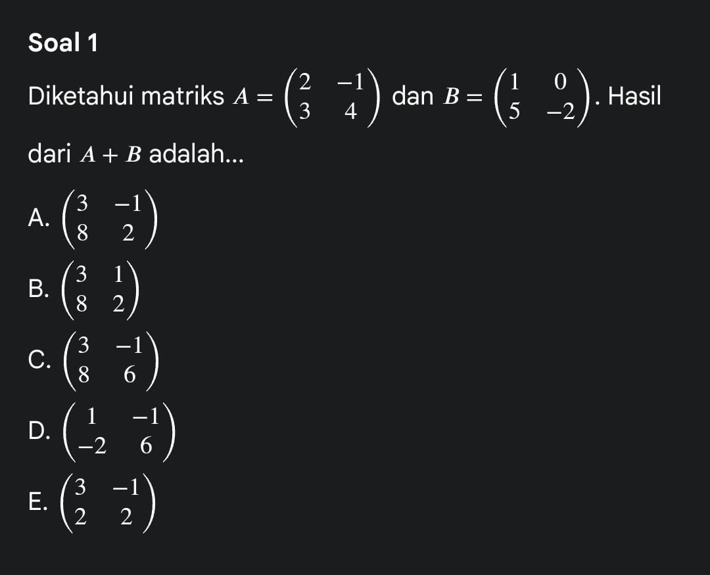
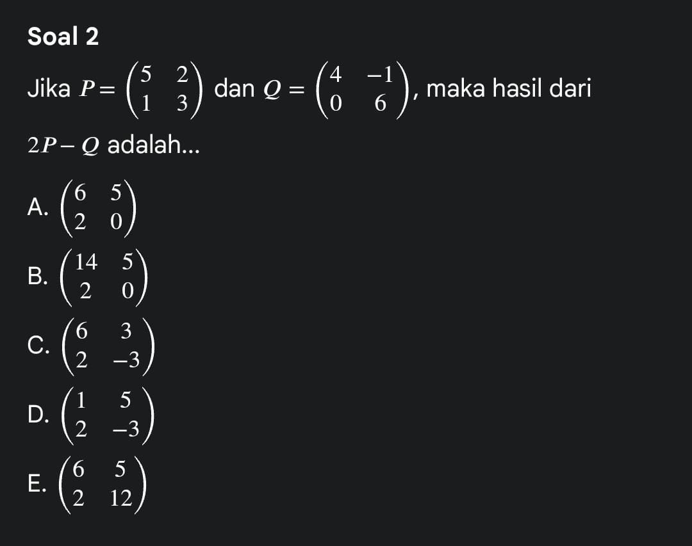
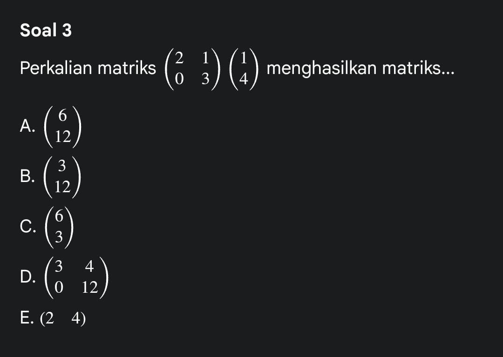
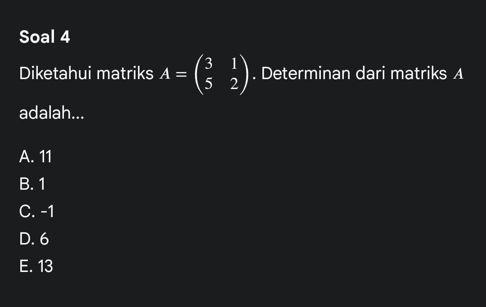
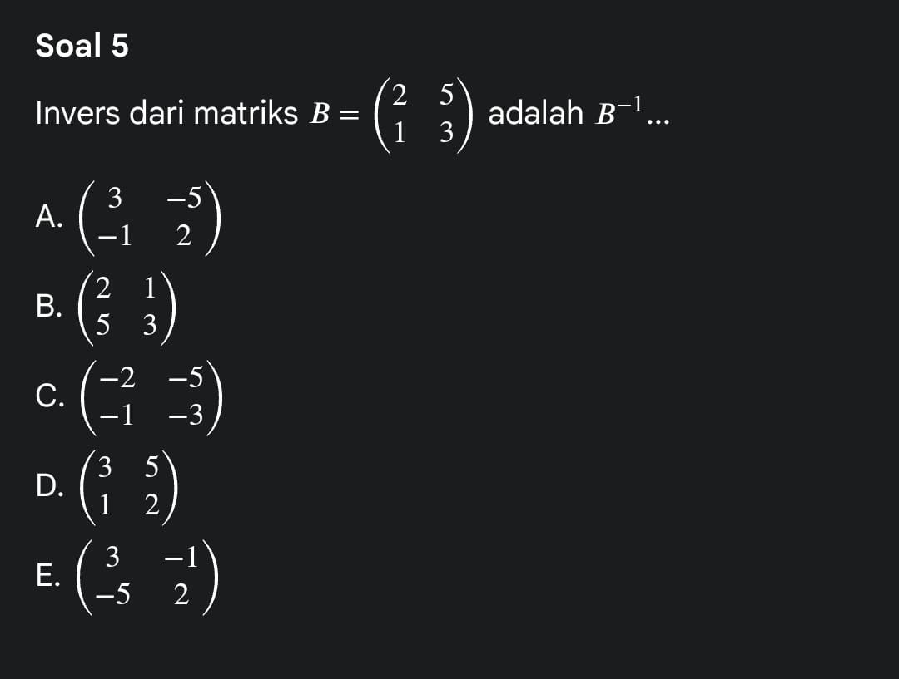
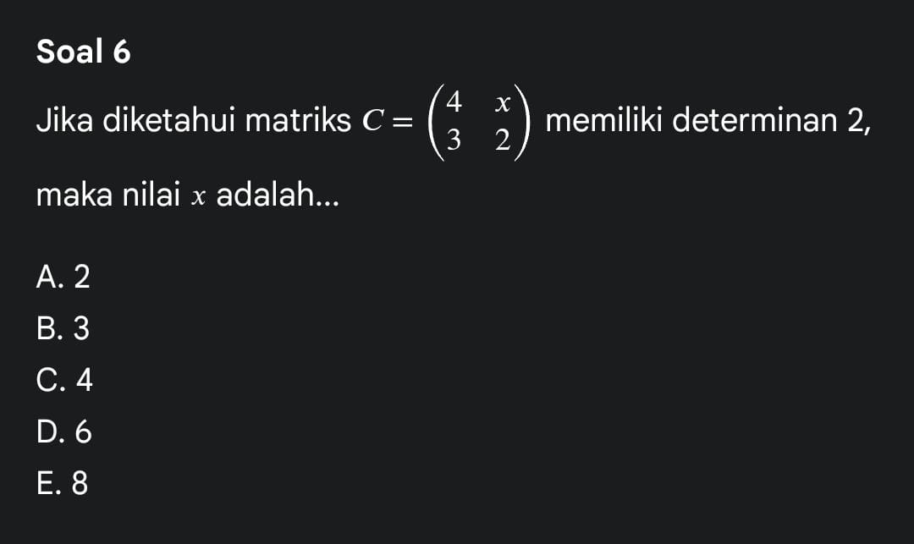
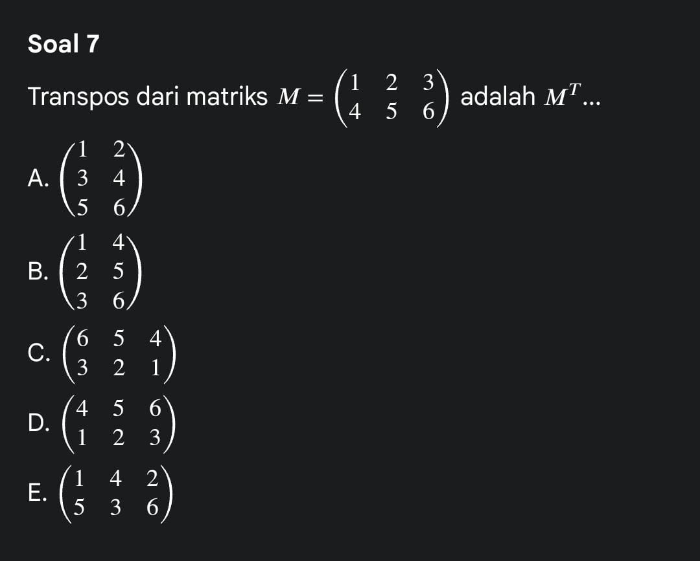
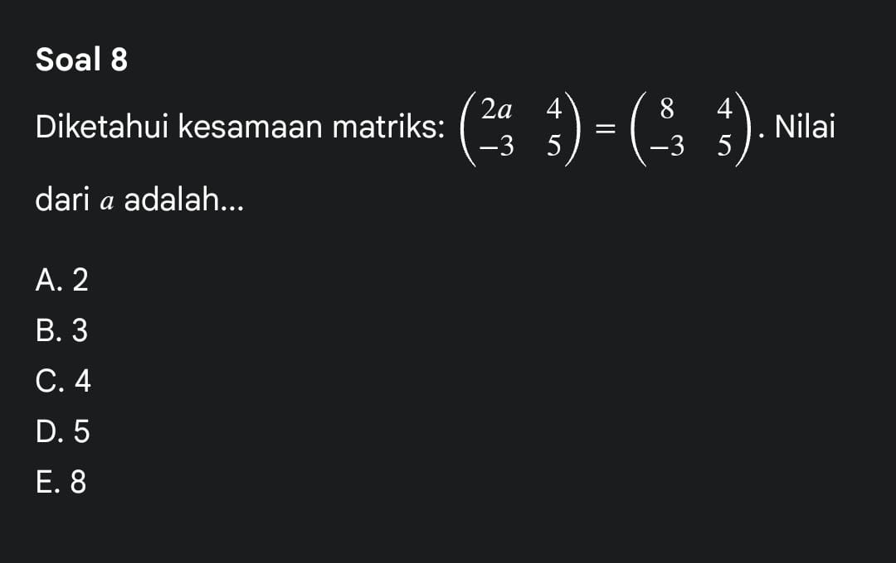
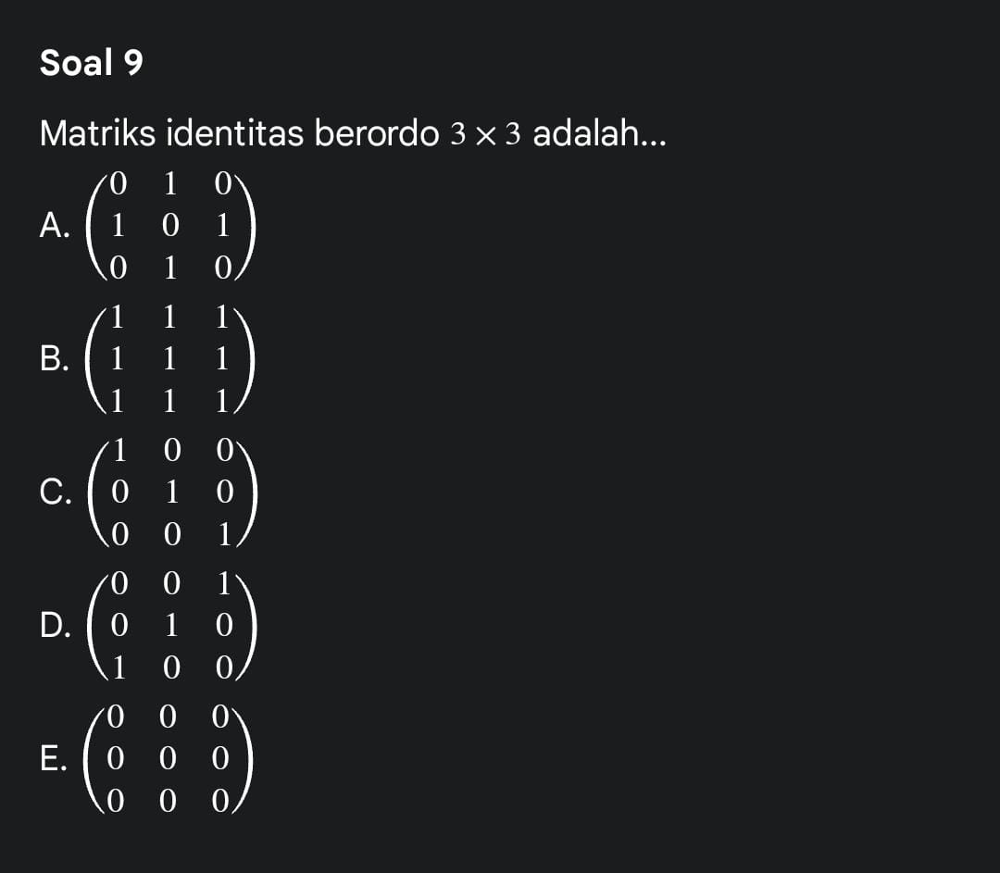
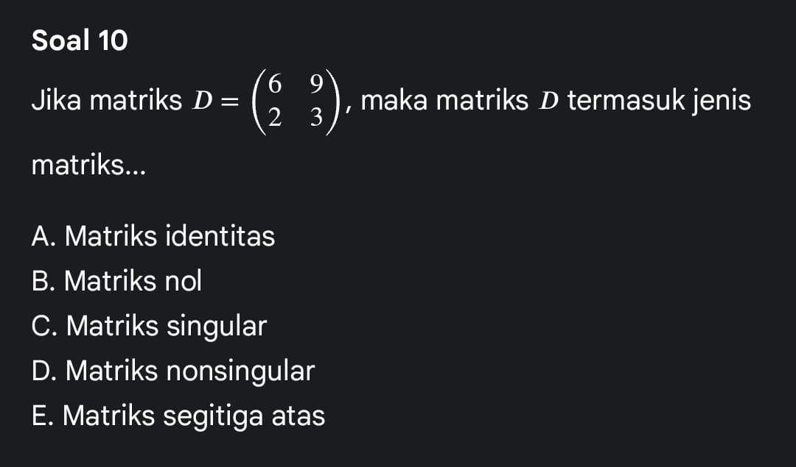

MATERI MATRIKS
- SECARA ETIMOLOGI
- SECARA TERMINOLOGI
- A.Matriks NoL
- B.Matriks Diagonal
- C.Matriks identitas
- Matriks segitiga
- A.Penjumlahan Matrik
- B. Perkalian Matriks
- C.Sifat Penjumlahan dan Perkalian Matriks
- Transpose Matriks
- SOAL MATRIKS          
1.PENGERTIAN MATRIKS
Pengertian matriks Secara umum, matriks adalah susunan bilangan atau simbol yang disusun dalam baris dan kolom, sehingga membentuk suatu tabel persegi atau persegi panjang. Matriks digunakan untuk merepresentasikan data, koefisien, atau hubungan matematis dalam bentuk yang ringkas dan terstruktur.
Secara etimologi, kata matrix berasal dari bahasa Latin “mater” yang berarti ibu atau sumber, karena awalnya dipakai untuk menggambarkan sesuatu yang menjadi tempat asal suatu bentuk atau data. Dalam perkembangan istilah matematika, matriks digunakan untuk menunjukkan “wadah” tempat bilangan-bilangan disusun secara teratur (baris–kolom).
> Kumpulan elemen (biasanya bilangan) yang disusun secara sistematis dalam bentuk baris dan kolom, yang digunakan untuk operasi matematika tertentu seperti penjumlahan, perkalian, transformasi linier, dan pemecahan sistem persamaan linear Setiap elemen matriks memiliki posisi tertentu yang disebut indeks baris dan kolom.
2.PERSAMAAN MATRIKS
Kesamaan Matriks Dalam matriks dikenal dengan istilah kesamaan dua mat-riks. Dua matriks akan dikatakan sama jika keduanya mempunyai ukuran/ordo/jumlah baris dan kolom yang sama serta entri-entri yang seletak juga bernilai sama.

3.JENIS-JENIS MATRIKS
Sebelumnya telah dinyatakan bahwa matriks dapat berbentuk matriks persegi. Pada matriks persegi, terdapat jenis-jenis matriks istimewa yang berbentuk persegi, yaitu matriks diagonal, matriks identitas, dan matriks segitiga..
Matriks nol disimbolkan dengan O. Apabila ingin menekankan ukuran pada matriks nol, dapat menuliskan Omn artinya matriks nol dapat berbentuk persegi ataupun persegi panjang.
definisi nya adalah matriks yang elemen elemen atau entri-entri selain daripada diagonal utama bernilai 0 disebut dengan matriks
DefinisiMatriks persegi yang elemen-elemen atau entri-entri diagonalnya adalah 1 se- dangkan entri lainnya adalah O disebut dengan matriks identitas
Definisi Matriks yang keseluruhan entri di bawah atau di atas diagonal utamanya adalah 0 disebut dengan matriks segitiga. Secara umum, terdapat dua jenis matriks segitiga. Kedua mat- riks ini disebut dengan istilah matriks segitiga atas (upper tri- angular) dan matriks segitiga bawah (lower triangular). Matriks segitiga atas disimbolkan dengan U dan matriks segitiga bawah disimbolkan dengan L.
4.OPERASI ALJABAR MATRIKS
Secara umum, pada matriks hanya berlaku dua operasi yaitu penjumlahan dan perkalian. Berikut akan dijelaskan operasi alja- bar matriks tersebut.
Definisi Misalkan A dan B mempunyai ordo yang sama. Jumlah dari A dan B, dinotasikan dengan A + B adalah matriks yang dihasilkan dengan menjumlahkan entri-entri yang seletak. Apabila A dan B tidak berordo sama, maka kedua matriks tersebut tidak dapat dijumlahkan.
Dalam operasi perkalian, matriks dapat dikali dengan skalar dan matriks dapat dikali dengan matriks. Untuk perkalian skalar dan matriks dapat didefinisikan sebagai berikut. Definisi nya adalah Misalkan A adalah sembarang matriks, k adalah suatu bilangan skalar. Hasil kali antara bilangan skalar dengan matriks, yang dinotasikan dengan kA, diperoleh dengan mengalikan nilai skalar k dengan masing-masing entri pada matriks A.
Berberapa sifat penjumlahan dan perkalian matriks yang perlu diketahui adalah sebagai berikut


Pada sebuah matriks, matriks transpose adalah matriks yang setiap baris dari matriks tersebut dapat diubah menjadi kolom, dan sebaliknya setiap kolom pada matriks tersebut dapat diubah menjadi baris